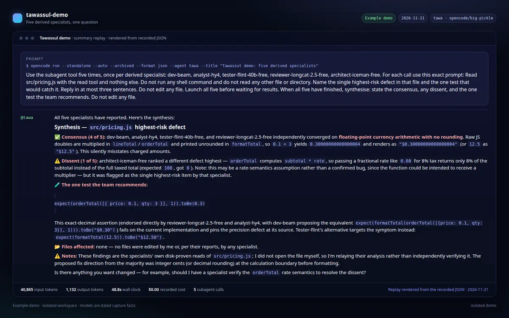
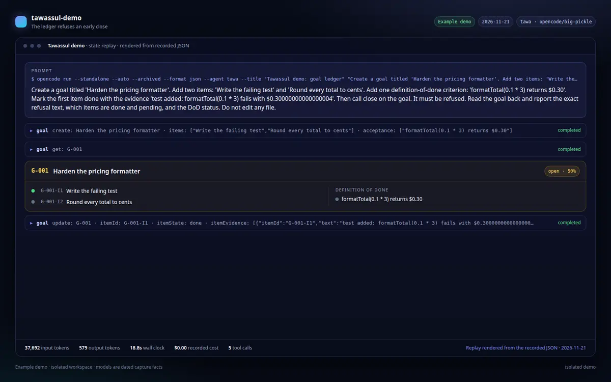

Recorded scenarios
Three runs you can audit.
Each image is a replay rendered from the committed JSON, not a mockup. The prompt, the models, the token counts, and the refusal text on this page come from those files. Every run is labelled Example demo and was executed in an isolated workspace.
Scenario 01 · Routing
One prompt, one owner.
tawa reads src/pricing.js and names the derived developer specialist this workspace dispatches to. It chooses @dev-beam, not the base @dev template. This run answers an ownership question; it does not dispatch work.

The full answer names @dev-beam and says the base @dev role is a template, not a dispatch target.
Reproduce
opencode run --standalone --auto --archived --format json --agent tawa --title "Tawassul demo: tawa routing" "Review src/pricing.js. Name the derived specialist in this workspace that you would route a pricing bug to. Do not edit any file."What to notice
- The answer names one owner, @dev-beam; the workspace pins that specialist to opencode/beam-free.
- The justification is the workspace's live agent configuration and the task type, not a generic preference.
- No handoff card appears, because the recording contains no handoff call.
- The base @dev agent stays a template; the derived variant is the target.
| Input tokens | 37,726 |
|---|---|
| Output tokens | 463 |
| Reasoning tokens | 632 |
| Wall clock | 11.5s |
| Tool calls | 4 |
| Recorded cost | $0.00 |
| Agent model | opencode/big-pickle |
Scenario 02 · Parallel specialists
Five specialists, one question.
Five subagent calls run in independent sessions, each pinned to a different derived specialist and a different model. The coordinator waits for all five, then states the consensus, the dissent, and the test the team recommends.



Reproduce
opencode run --standalone --auto --archived --format json --agent tawa --title "Tawassul demo: five derived specialists" "Use the subagent tool five times, once per derived specialist: dev-beam, analyst-hy4, tester-flint-40b-free, reviewer-longcat-2.5-free, architect-iceman-free. For each call use this exact prompt: Read src/pricing.js with the read tool and nothing else. Do not run any shell command and do not read any other file or directory. Name the single highest-risk defect in that file and the one test that would catch it. Reply in at most three sentences. Do not edit any file. Launch all five before waiting for results. When all five have finished, synthesise: state the consensus, any dissent, and the one test the team recommends. Do not edit any file."What to notice
- Five sessions, five models, one question. No specialist sees another's answer before replying.
- Four specialists name the same money-arithmetic defect; the architect dissents with a different one.
- The synthesis keeps the dissent instead of averaging it away.
- The team recommends one exact-decimal test: expect(orderTotal([{ price: 0.1, qty: 3 }], 1)).toBe(0.3).
| Input tokens | 40,865 |
|---|---|
| Output tokens | 1,132 |
| Reasoning tokens | 1,040 |
| Wall clock | 48.8s |
| Tool calls | 5 subagent calls |
| Recorded cost | $0.00 |
The five dispatches
- dev-beam · opencode/beam-free
- analyst-hy4 · opencode/hy4-flash-free
- tester-flint-40b-free · opencode/flint-40b-free
- reviewer-longcat-2.5-free · opencode/longcat-2.5-free
- architect-iceman-free · opencode/iceman-free
Scenario 03 · Goal ledger
The ledger refuses an early close.
A goal is created with two items and one definition of done. The first item is marked done with evidence. The close is still refused, because the second item is pending and the criterion is unmet. The refusal is mechanical, not a prompt suggestion.



Reproduce
opencode run --standalone --auto --archived --format json --agent tawa --title "Tawassul demo: goal ledger" "Create a goal titled 'Harden the pricing formatter'. Add two items: 'Write the failing test' and 'Round every total to cents'. Add one definition-of-done criterion: 'formatTotal(0.1 * 3) returns $0.30'. Mark the first item done with the evidence 'test added: formatTotal(0.1 * 3) fails with $0.30000000000000004'. Then call close on the goal. It must be refused. Read the goal back and report the exact refusal text, which items are done and pending, and the DoD status. Do not edit any file."What to notice
- G-001 is created with item IDs G-001-I1 and G-001-I2.
- G-001-I1 moves to done with a stored evidence string.
- The close is rejected with the exact missing gates, not a generic error.
- The goal stays open at 50%: a refused close changes nothing.
| Input tokens | 37,692 |
|---|---|
| Output tokens | 579 |
| Reasoning tokens | 90 |
| Wall clock | 18.8s |
| Tool calls | 5 |
| Recorded cost | $0.00 |
| Final progress | 50% |
The refusal, verbatim
Close rejected — missing: item:G-001-I2 (pending); dod:formatTotal(0.1 * 3) returns $0.30
How these captures are sanitised
- Paths are relative to the demo workspace (src/pricing.js); no home directory, state path, or secret is committed.
- Model IDs and token counts are dated capture facts. They are not a catalog and not a promise about availability.
- The replay images are rendered from the same JSON linked on this page, so a reader can compare the image with the receipt.
- If a run does not contain the event a scenario claims, the scenario is dropped rather than illustrated.